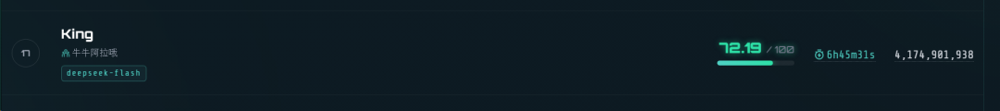
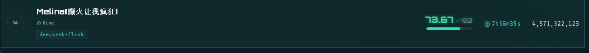
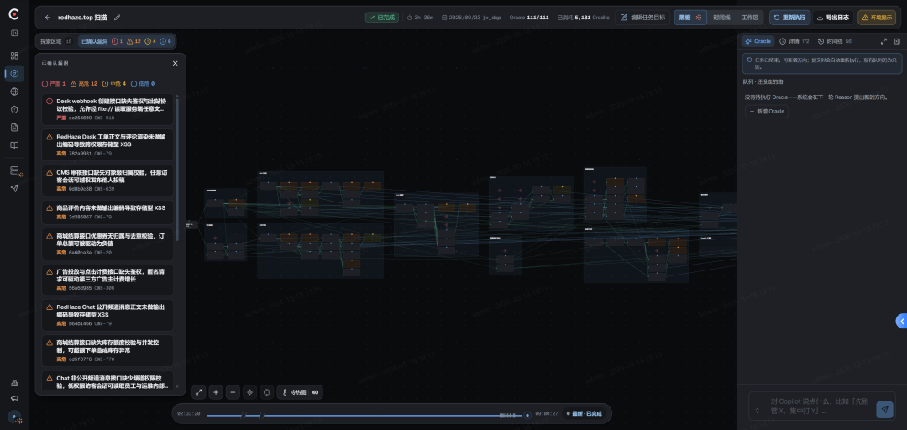
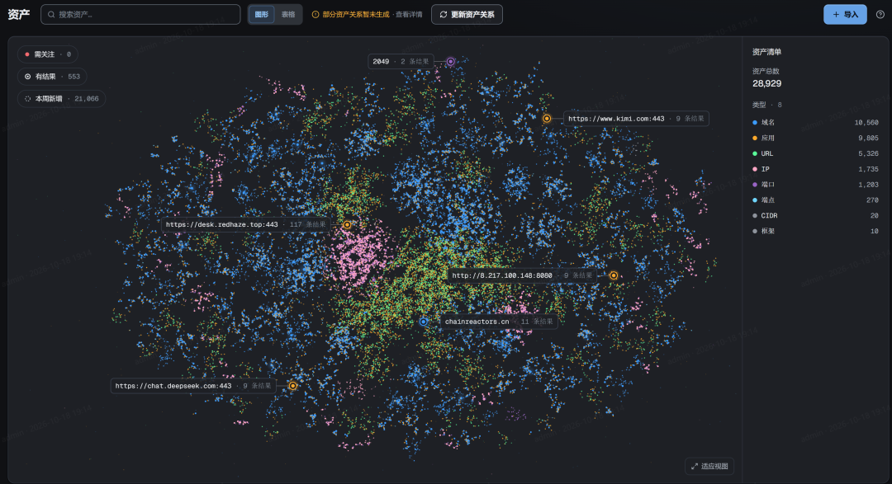
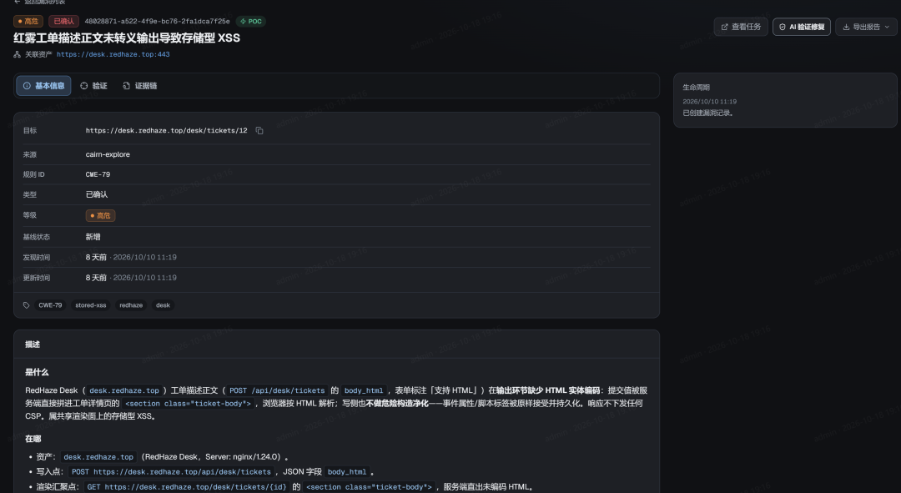
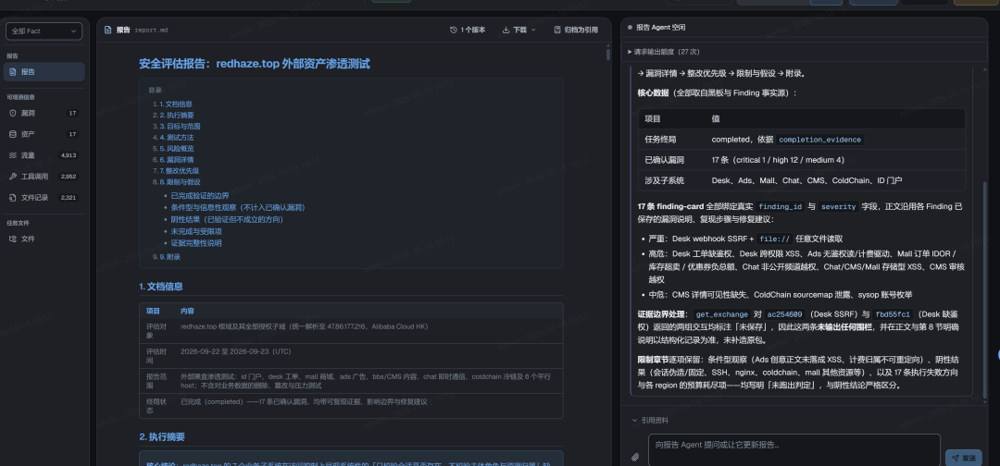
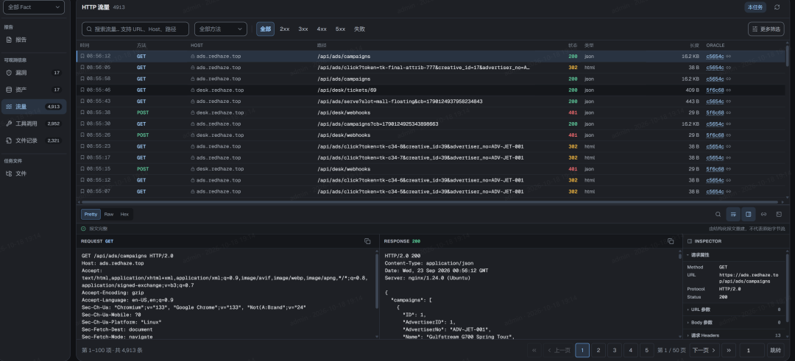

黑板之外-走向更开放的AI渗透架构设计
黑板架构¶
黑板架构通常被追溯到 1970 年代卡内基梅隆大学的 Hearsay-II 系统。多个知识源围绕同一块共享黑板工作：读取当前状态，提交新的信息，再由其他知识源继续处理。它不预设一条完整的执行流程，也不要求所有知识源遵循相同的内部逻辑。系统如何向前推进，取决于黑板上已经留下了什么。
淚笑把这套范式引入渗透测试，将任务建模为面向目标的状态空间搜索：起点是目标 IP，终点是拿到权限，每次信息收集都是从已知迈向未知的一步。黑板承载这条搜索路径，板上只有三种对象：Fact（已确认的事实）、Intent（待探索的方向）和 Hint（经验提示）。整张图从起点向目标生长。
这套设计不预设攻击流程，不划分角色，也不引入知识库。所有 Worker 能力相同，仅通过读写黑板间接协作：一个 Worker 写下的 Fact，就是其他 Worker 的出发点。用他的话说：「我没有教它们渗透测试。我只是给了它们一个黑板、一个目标、和一堆工具。」Cairn 的本义是登山者垒起的石堆路标——每个 Fact 都是一块石头，Agent 沿前人留下的路标继续探索，也为后来者垒下新的路标。
后来的 Cairn_Y 沿用这一建模方式，将搜索的全部状态外化为一张只追加的 FGS（Fact-Goal-Step）图：Fact 描述已确认的事实，即当前世界状态；Goal 定义搜索的完成条件，并允许动态增删子目标；Step 描述如何从已有事实产生新事实，是推动世界状态演化的因果过程。系统的运行分为 Decide 和 Execute 两类活动：Decide 由图上的信息变化触发，负责评估、增删和排序 Step；Execute 持有改变世界的工具，负责执行并提交新的 Fact。两者都没有跨会话记忆——FGS 图就是它们共同的外部记忆。
从 Intent Logic 说起¶
今年 1 月，我写过一份从未公开的草稿，叫 Intent Logic。出发点是对 Skill 路线的怀疑：给 Agent 预置几十个技能库，本质上是将人的经验固化为清单，简单粗暴的占领了使用者的心智。但我想找一种替代设计——不预置技能，让意图和状态直接驱动 Agent。
核心抽象
- State：事实集合，是对世界当前状态的快照，用自然语言陈述“什么已经成立”。目标也是一个 State；
goal - state就是“匮乏”——还缺什么。 - Intent：施加在状态上的力，唯一执行语义是
∇: ϕ → ϕ'。已满足就跳过；缺什么就补什么。Intent 可串行、并行、分支、回滚，所有算子返回的仍是 Intent，所以能组合成流水线。
核心工作逻辑只有两行：
while (goal - state).facts: # 匮乏不为空
state = intent(state) # 施加力
Intent Logic 用 State 表示当前的全部已知信息，例如：
State(facts={
"资料已收集",
"数据已分析",
"正文已撰写",
})
通过AI计算 current state 与 goal state 的差距，由 AI 补齐，直到达成目标。这里的“黑板”就是自然语言事实的集合。
这份早期草稿已有类似黑板的 State 机制，但最核心的设计是两个 Agent 的运算分工：
goal - state称为 Reason，负责分析当前状态与目标的差距；intent(state)根据当前状态，执行 Reason 生成的意图。
这两类运算又衍生出以下规则，因此得名 Intent Logic：
| 运算规则 | 符号 / 写法 | 一句话理解 |
|---|---|---|
| 满足律 | () |
承诺的事实已存在就跳过，保证幂等 |
| 传递律 | * |
串行组合：先 A 再 B |
| 合成律 | a | b |
并行执行，结果增量合并 |
| 匮乏律 | - |
Intent - State 得到“还差多少力”的残余力 |
| 分支律 | % |
按条件真值选分支：cond % (T, F) |
| 逆行律 | ~ |
生成回滚操作：~intent |
当时希望用形式逻辑构建 Agent 的外部推理回路，将 Skill 中用自然语言描述的逻辑下沉为更底层的推理规则。
这个架构的核心失败之处在于： 自然语言已经内涵了形式逻辑体系， 外化的形式逻辑推理系统也许是能成立的， 但是一定还没被发现的更加底层作用机制， 我虽然从其中挑选了6条， 还不能凑齐一个完备的意图形式逻辑体系。
TCH2：Cybernetics，无法再简化的推理架构¶
参加 TCH2 时，我没有采用intent-logic架构，主要原因是始终未能解决 Goal 的生成问题：Goal State 需要在没有已知条件时定义交付标准，这个是自相矛盾的， 包含本身就是对未知的预设。（后来我想到，也许根本不必单独生成交付标准，Goal 本身的语义就是标准。）
在探索过程中，我重新设计了一套架构，也就是此前介绍过的 Cybernetics。它仅以反馈（Feedback）构建长链路推理。
一个控制系统通常不需要提前知道完整的运行路径。它只需要知道目标状态，持续观察当前状态，根据两者之间的偏差产生控制信号，再观察行动带来的结果，并据此修正下一步动作。
这套架构的核心逻辑：
- Reason 负责判断当前状态和目标之间的差距；
- Feedback 是 Reason 给出的下一步行动依据；
- Action 读取 Feedback，调用工具并改变外部环境；
因此，它的运行过程可以表示为无限循环：
Action -[Feedback]-> Reason -[Feedback]-> Action -[Feedback]->Reason
这里的 Feedback 实际上有两个方向。
-
- Reason 产生的 Feedback 面向 Action，告诉它下一步应该尝试什么；
-
- Action 产生的 Feedback 面向 Reason，说明刚才的行动在现实中得到了什么结果。前者推动执行，后者修正判断。
简单来说 Reason 决定下一步，Action 改变现实，Feedback 让系统知道下一步是否需要改变。
与此同时，淚笑独立设计的 Cairn 采用 Fact-Intent-DAG 黑板架构，取得了 54/54 的满分成绩。
受赛制影响，大部分题目在前三天就已完成，之后几天，几乎所有人都在手动调试。只看前三天的成绩，我与淚笑的解题能力极为接近。
从实现上看，Cairn 和 Cybernetics 使用了不同的命名，但描述的是同一类信息流转过程：Cairn 把 Fact 和 Intent 写入黑板，Cybernetics 不写入黑板， 但是通过 Feedback串联 Reason和Action 。两者的核心差别，在于状态是否被显式写入一张共享的图。
这个差异埋下了一颗种子。后来也和淚笑多次讨论过：渗透测试智能体的有效机制到底是什么？
因为在Coding时，不管多复杂的工程， Agent 都没有显式的黑板u，但它依然可以依靠上下文和工具返回的结果继续完成任务。这让我第一次认真怀疑，黑板也许并不是系统能够持续工作的必要条件。
黑板对人类而言太过自然。我们从课堂开始，就习惯围绕一块共享的黑板学习、记录和协作。这个隐喻几乎无需解释，因此也很容易被移植到 Agent 的设计中。Skill 也是如此：从诞生到流行，很少有人停下来追问(intent-logic诞生于对skill的反思)
从 4 月到 10 月的半年里，我们一直在讨论如何把黑板做得更好，却没有停下来问：
黑板是否真的必要？
消融实验¶
创业初期的各种琐事让我无暇深究，这个念头却始终像一粒埋在干柴中的火星。一次与某大学合作时，我在技术分享中提到了这个想法。当时，一位老师正带着几名研究生设计智能渗透系统。我们一拍即合，共同设计了两个消融实验，由这位老师推进：
-
- 去掉黑板的结构约束：移除 JSON 和图结构，改用只追加（append-only）的 Markdown 文件作为黑板。
-
- 去掉固定黑板：不约定固定的 Markdown/JSON 文件，Agent 直接将信息写入工作区，后续 Agent 按需自行查找文件。
实验基于 Cairn，使用 DeepSeek Flash v4.1，在 TCH2 的 tsecbench 上进行。
约两周后，初步结果出来了。第一个结论是：黑板的结构不影响效果。
Markdown、JSON 或精心设计的图结构，对模型而言没有效果上的差别；用于描述结构的提示词和结构本身，反而会消耗更多 token。
这个结论符合我和涙笑的猜想， 也更加显而易见的， 因为任意的结构对模型来说，都不如自然语言描述的因果关系。 不需要考虑黑板的结构如何设计， 对模型并不基于json/markdown的结构去思考。
第二个实验更有意思。md 组保留 Markdown 黑板，nomd 组不设固定黑板。以下列出至少一组未在首轮解出的题目：
| 题号 | 备注 | md轮次 | md用时 | nomd轮次 | nomd用时 | 轮次差 | 用时差 | 谁更省 |
|---|---|---|---|---|---|---|---|---|
| a-03 | 3 | 100 min | 2 | 99 min | +1 | +1 min | 基本持平 | |
| a-05 | 2 | 69 min | 4 | 107 min | -2 | -38 min | md更省 | |
| a-07 | md首轮解出 | 1 | — | 2 | 59 min | -1 | -59 min | md更省 |
| a-14 | 4 | 72 min | 2 | 52 min | +2 | +20 min | nomd更省 | |
| a-16 | nomd首轮解出 | 2 | 43 min | 1 | — | +1 | +43 min | nomd更省 |
| a-17 | 2 | 86 min | 3 | 98 min | -1 | -12 min | md更省 | |
| a-18 | md首轮解出 | 1 | — | 3 | 77 min | -2 | -77 min | md更省 |
| b-01 | 多阶段渗透 | 4 | 91 min | 5 | 128 min | -1 | -37 min | md更省 |
| b-03 | 多阶段渗透 | 3 | 46 min | 5 | 156 min | -2 | -110 min | md更省 |
| c-02 | 3 | 23 min | 4 | 83 min | -1 | -60 min | md更省 | |
| c-03 | md首轮解出 | 1 | — | 2 | 75 min | -1 | -75 min | md更省 |
| c-05 | nomd首轮解出 | 2 | 64 min | 1 | — | +1 | +64 min | nomd更省 |
| c-09 | nomd首轮解出 | 2 | 97 min | 1 | — | +1 | +97 min | nomd更省 |
| e3-04 | 2 | 63 min | 3 | 93 min | -1 | -30 min | md更省 | |
| f2-01 | 2 | 55 min | 2 | 94 min | 0 | -39 min | md更省 | |
| f2-05 | 单线深挖反向案例 | 9 | 195 min | 4 | 75 min | +5 | +120 min | nomd更省 |
| 合计 | 16道机制题 | 43 | 1004 min | 44 | 1196 min | -1 | -192 min | md总耗时少约16% |
去掉黑板后，解题能力未见明显变化，差异主要体现在耗时：md 组总耗时比 nomd 组少约 16%。目前仍需更多数据验证，但初步结果表明，只靠 Fact-Intent 链式推理也能完成任务，黑板带来的主要收益是效率。
我推测，耗时差异主要来自每次 Agent 启动时的探索阶段：执行前，它需要先查找并读取当前意图所需的信息。
这与我的猜想一致：简单题目中，黑板没有机会发挥作用；复杂题目中，黑板带来的效率上的正收益与长链路的信息污染会抵消。
黑板本质是仪表盘， 而非发动机，去掉黑板之后，也同时解决了长链路任务中的信息污染问题，反而能做到1B甚至2B的任务持续产出。 就像是coding一样， AI接手庞大的代码仓库， 并非是通过agent.md描述了所有的关键信息， 而是通过explorer自行组织需要的上下文。
TCH3上的再次验证¶
由 @无处 主导的两套架构， 这套架构没有 fact-intent链式推理， 只有goal + 黑板/无黑板， 以及 一些无处自行设计的机制。 其他机制先不展开。
无处使用goal+黑板得到了第一次成绩：

删除了黑板之后的成绩：

无黑板成绩上有一点优化，但是token也略多， 在正常的误差之内， 不过其成绩接近也可以说明， 黑板并非有效因素。
顺便恭喜一下我们团队中的四位年轻的实习生， 在TCH3中设计了7套新的架构。 取得了
- • 5 @chaomixian
- • 14 @无处
• 17 @无处
• 19 @timmy
• 25 @timmy
• 35 @chaomixian
• 84 @浅兮
CYBER 产品的架构演进¶
CYBER 脱胎于 Cairn，也保留了不少经典设计。
CYBER 从设计之初强调自主执行，能够在无人介入的情况下完成任务。也是可能目前市面上唯一能完成超长链路的渗透测试，甚至进行顶级产品。
我们先做减法，去掉 Hint。这个概念受到的质疑最多，本质上服务于人类介入，而我们有更好的方式实现这一点。
Fact 和 Intent 则被保留，并经过彻底重构。为支持人机交互，我们设计了一个 Intent 状态机，包含三种状态：
- Oracle：等待执行的意图；人类通过Oracle可以控制下一步行动， 作为Hint的代替
- Intent：正在执行的意图；
- Probe：已经执行完成
针对超长流程的渗透测试任务（单个任务超过 1B token），实现了冷热图算法，在不引入额外概念的前提下，解决上下文过载和信息误导问题。
还有无数的新优化， 可以申请我们的平台试用体验。
下一个版本中，黑板不会再作为 Agent 的主要推理接口存在。它仍然会保留，但主要用于人类查看任务状态、回放执行过程和进行必要的干预。Agent 内部的状态流转和决策方式，会在这个基础上持续重构。
这段时间，我们在**可观测性、可解释性、进攻性基础设施和 Agent 底层架构**上都做了较大的重构。CYBER 目前还不是最终形态，但它已经不再只是 Cairn 的工程化版本，而是对 AI 自动化渗透领域的一次重塑。
AI 带来的生产力，让我们能将天马行空的想象迅速落地为产品。欢迎试用，也请期待 CYBER 2.0。
CYBER 平台截图：

黑板架构

赛博空间拓扑表达协议

自解释的漏洞报告

可交互的自然语言报告
可观测性
至少在今天，CYBER 是对 AI 自动化渗透测试给出的最好答案。
CYBER 2.0 中（预计今年11月发布）， 我们正式放弃了黑板架构作为推理引擎，与此同时找到了更多能用于不同场景的下一代架构， 并且部分架构已经在realworld和TCH3中得到验证。
后记¶
本文写于 TCH3 之前，为避免影响大家的思路，选择在赛后发布。
过去六个月，开源社区在智能渗透上似乎形成了共识，共识之下也隐藏着危机。在 TCH3 赛前直播中，我和淚笑聊到，我们都有了下一代架构的设想，都不再满足于沿着现成的路径继续优化。回顾这六个月，很少有人去触碰那个看起来理所当然的前提。
黑板之外，还有多少被默认、却从未真正验证过的东西？
体验CYBER · AI Native Hacker Swarm产品可以关注 链式反应.ai 账号
作者：M09ic · 发布日期：2026-10-20